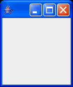

GUI 2 - Tiny Window - Your first window
- Show how a window can be built using JFrame.
JFrameclassJFrame() // Constructor setDefaultCloseOperation(...) // Make close box stop execution. setVisible(true) // Show window and monitor user interaction.
Let's start by learning how to build the simplest possible window.
|
The following is a very small program that creates a window. It doesn't do anything, and it's so small you might have a hard time finding it in the upper left corner of your screen. |
|
Try resizing it. A default JFrame can do a few things -- it understands minimize and maximize, it can be dragged from the title bar, and it can be resized. If you resize it, you'll notice that the content pane is completely empty -- we haven't added any components to it yet. Close box. One thing that the default JFrame doesn't handle well is the close box. The default close box simply makes the window invisible, but doesn't stop the program! You must explicitly make the close box do something. A good choice for simple programs is to terminate the program when the close box is clicked, which is done below. |
 |
1 2 3 4 5 6 7 8 9 10 11 12 13 14 15 |
// File : gui-tutorial/tw/TinyWindow.java
// Purpose: Create a very small window!
// This is about the smallest possible GUI program.
// It does nothing, but close box and window resizing work.
// Author : Fred Swartz - 2006-11-09
import javax.swing.*; //Note 1
class TinyWindow {
public static void main(String[] args) {
JFrame window = new JFrame(); //Note 2
window.setDefaultCloseOperation(JFrame.EXIT_ON_CLOSE); //Note 3
window.setVisible(true); //Note 4
} //Note 5
}
|
Notes
- This import statement gets all classes in the javax.swing package, although we use only the JFrame class here. There are usually a couple of imports of other common packages.
- "Windows" are implemented by the JFrame class.
- Make the application quit when the close box is clicked.
- After the window has been constructed in memory, display it on the screen. The setVisible call also starts a separate thread to monitor user interaction with the interface.
- When we are finished setting up and displaying the window, don't call System.exit(0). We don't want to stop the program. Although main returns, execution continues because the call to setVisible(true) created another execution thread, A GUI program builds the user interface, then just "goes to sleep" until the user does something.